Metodología
- Introducción
- Datos
- Análisis Exploratorio
- Modelo Predictivo
- Supuestos a cumplir
- Datos Atípicos
- Árbol de decisión
- Bosques
- Conclusión
Introducción
Este estudio analiza la variación de los precios de propiedades en alquiler dentro del mercado inmobiliario, considerando factores como la ubicación, las características de la vivienda y el entorno. El objetivo es identificar cómo influyen distintas variables en el precio por metro cuadrado, evaluando diferencias entre barrios y municipios, así como la importancia de cada factor en el modelo. El análisis busca aportar información útil para compradores, vendedores e inversores interesados en comprender mejor los determinantes del precio inmobiliario.
Datos
Los datos utilizados en este análisis se han extraído de una página web llamada Kaggle, una plataforma que reúne a la comunidad de Data Science con más de 536 mil miembros activos en 194 países. Los datos contienen variables que describen diversos aspectos de una propiedad disponible para alquiler en el año 2023. La base de datos abarca un total de 2361 registros y 45 variables, que incluyen desde el precio hasta características internas y externas de la propiedad.
Análisis Exploratorio
Se realizó un análisis exploratorio que comenzó con la limpieza de los datos, eliminando duplicados, valores atípicos y nulos. Se descartaron variables redundantes (Furnished…32 y Furnished…42) y la variable Floors por su baja calidad y escasa relevancia. Las zonas de Montevideo se agruparon en municipios mediante una nueva variable (Municipio), y el precio se transformó a precio_m2 para facilitar el análisis. Los valores faltantes se imputaron según cada variable: se asignó la zona a la dirección, la media al precio_m2 y la categoría más frecuente a condición y disposición. Además, se recodificaron variables para mejorar su análisis y evaluar su relación lineal con precio_m2. Finalmente, se utilizaron visualizaciones para identificar qué variables influyen más en el precio por metro cuadrado.
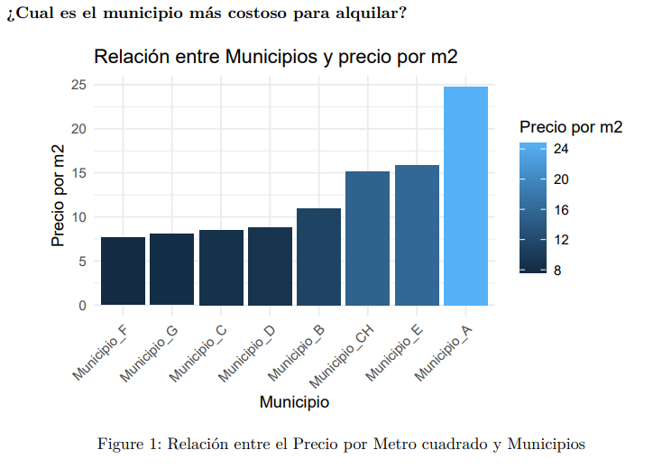
El análisis muestra que el precio por metro cuadrado aumenta a medida que las propiedades son más nuevas; para obtener este resultado fue necesario filtrar datos y eliminar valores atípicos que afectaban la visualización.
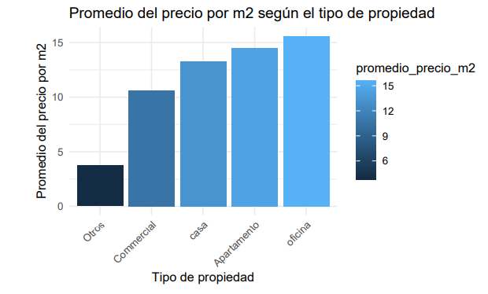
En promedio el tipo de propiedad que son mas costosas son las oficinas seguido por los apartamento. En este análisis también se re-codificaron ciertas observaciones para poder analizar mejor los datos.
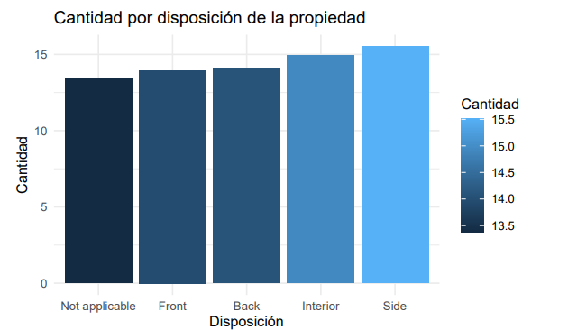
No hay una diferencia muy notoria con respecto al precio por metro cuadrado en cuanto a la dispocicion en que se encuentra las diferentes propiedades.
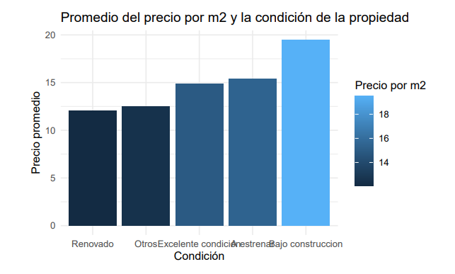
La mayoría de las propiedades en alquiler están en buenas condiciones, lo que facilita una mudanza inmediata. Además, los alquileres en construcción, para estrenar y en excelente condición presentan los precios promedio por metro cuadrado más altos.
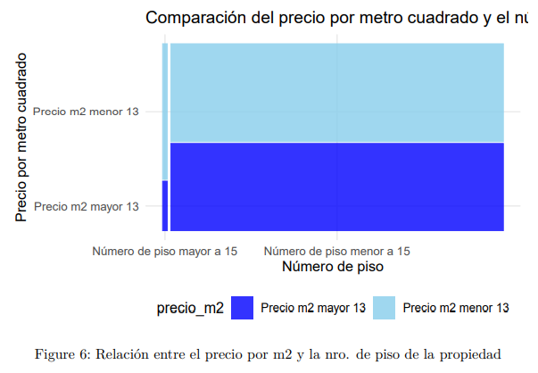
El gráfico muestra que las propiedades en pisos bajos (≤15) suelen tener precios por metro cuadrado de hasta 13 dólares, mientras que las ubicadas en pisos altos (>15) presentan con mayor frecuencia precios superiores a 13 dólares. Esto sugiere que el número de piso influye en el precio por metro cuadrado, siendo más altos los valores en pisos elevados.
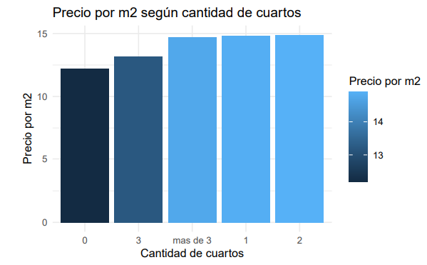
La cantidad de cuartos no afecta demasiado el cambio en el precio por metro cuadrado. Puede sonar un poco extraño ya que en la realidad cuantos mas cuartos es mas costosa la propiedad, por lo tanto es un poco contradictorio con la realidad.
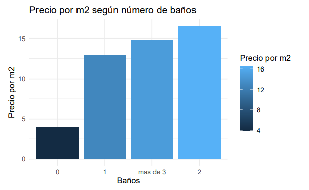
A continuación se muestra un gráfico que ilustra cómo la cantidad de baños afecta el precio por metro cuadrado. En este análisis, la variable baños se re-codifico en cinco grupos para facilitar su interpretación y análisis. el precio se incrementa hasta la propiedad que tiene dos baños. Sin embargo, después de dos baños, el impacto en el precio es menor. Es decir, una propiedad con tres baños es mas cara que una con uno, pero es considerablemente más cara que una de dos baños. Parece que llega a un punto en el que la cantidad de baños no afecta el precio por metro cuadrado de una propiedad.
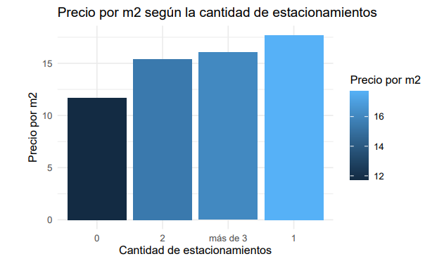
Los valores de la variable cant_de_est se re-codificaron en cuatro grupos para una mejor interpretación El precio por metro cuadrado aumenta cuando la propiedad cuenta con estacionamiento, aunque la diferencia entre uno y dos no es significativa; las propiedades con tres estacionamientos resultan ligeramente más caras. Además, tener dos o más cuartos o habitaciones se asocia con un mayor precio promedio por metro cuadrado.
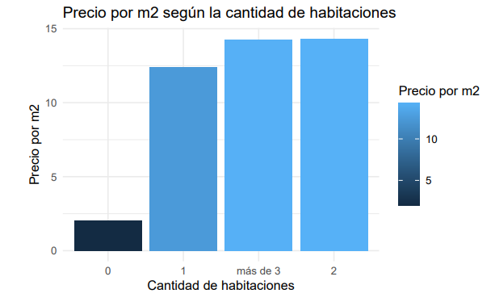
A mayor cantidad de habitaciones, el precio por m2 aumenta.
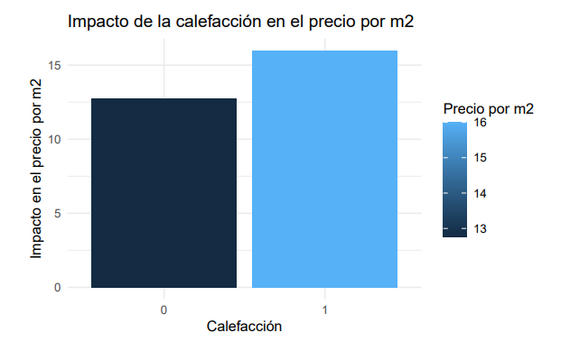
El tener calefacción aumenta el precio por m2.
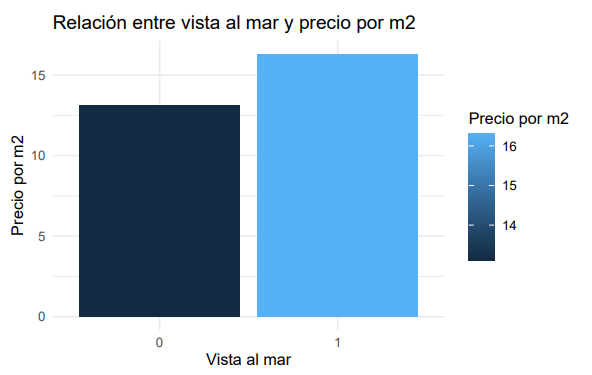
Las propiedades tienen un aumento del precio por metro cuadrado cuando tienen vista al mar y cuando tienen calefacción. Esto es importante a tener en cuenta cuando un inquilino esta interesado en alguna propiedad
Modelo Predictivo
Se realizó una exploración de las variables para evaluar su relación con el precio por metro cuadrado mediante gráficos lineales. A partir de este análisis, se construyó un modelo de regresión lineal utilizando las variables que parecían tener mayor influencia (municipio, condición, baños, año de construcción, tipo de propiedad, vista al mar, cantidad de estacionamientos y número de piso). Sin embargo, los resultados del modelo fueron poco satisfactorios: la mayoría de los coeficientes no resultaron estadísticamente significativos (p-valor > 0.05), el error promedio de predicción fue alto (15,90 dólares por m²) y el R² fue muy bajo, lo que indica que las variables explicativas no logran explicar adecuadamente el precio por metro cuadrado. Debido a estos malos resultados, se decidió evaluar los cuatro supuestos del modelo para analizar su validez predictiva.
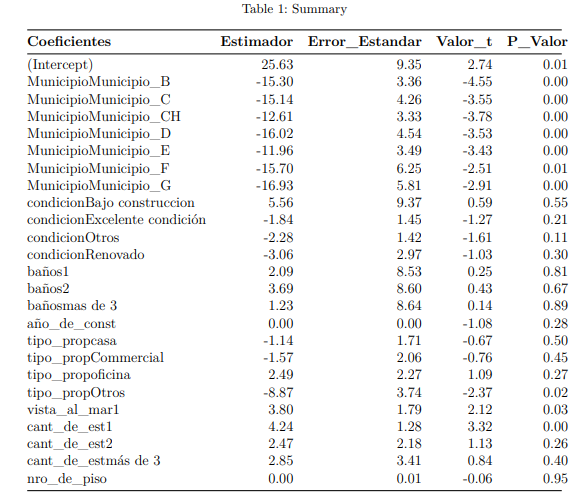
Supuestos a cumplir
Para poder obtener conclusiones confiables, el modelo debe cumplir con determinados supuestos:
- No multicolinealidad: exacta ni aproximada, para asegurar que la matriz X sea de rango completo (conformable).
- Linealidad: la relación entre variables explicativas y la respuesta debe ser aproximadamente lineal.
- Homoscedasticidad: la varianza de los errores no depende de ninguna de las variables explicativas.
- Normalidad: los errores del modelo deben presentar una distribución normal.
- Atípicos / influyentes: si bien no es un supuesto en sí mismo, es recomendable identificar observaciones atípicas e influyentes.
5.1 Multicolinealidad
La mayoría de las variables tienen valores de GVIF ajustados menores a 2, lo que generalmente se considera aceptable, por lo que no hay problemas graves de multicolinealidad en el modelo.
5.2 Homocedasticidad
El test de Breusch-Pagan examina si la varianza de los residuos depende linealmente de las variables independientes del modelo original. Se realiza una regresión auxiliar de los residuos al cuadrado contra las variables independientes originales. Se calcula un estadístico de prueba basado en la regresión auxiliar. El estadístico de prueba sigue una distribución chi-cuadrado.
| Test | Estadístico | gl | p-valor | Conclusión |
|---|---|---|---|---|
| Breusch-Pagan | 25.43 | 5 | < 0.001 | Se rechaza H₀ |
5.5 Normalidad
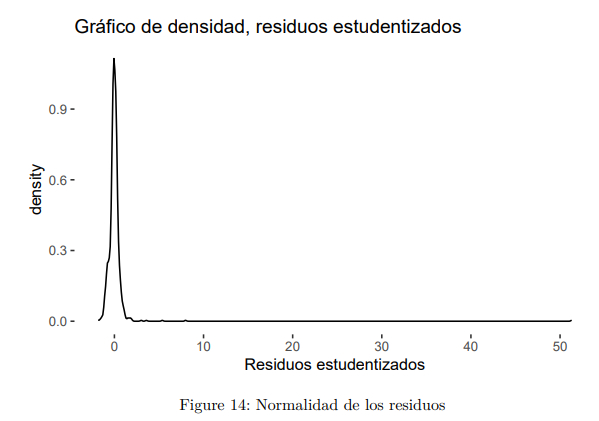
La densidad de los residuos estudentizados no sigue una distribución normal. Esto se confirma mediante los tests de Shapiro-Wilk, Jarque-Bera y Kolmogorov-Smirnov, todos con p-valor menor a 0.05, por lo que se rechaza la hipótesis nula de normalidad y se concluye que los residuos no se distribuyen normalmente.5.5 Linealidad
Se probo que se cumpliaDatos Atípicos
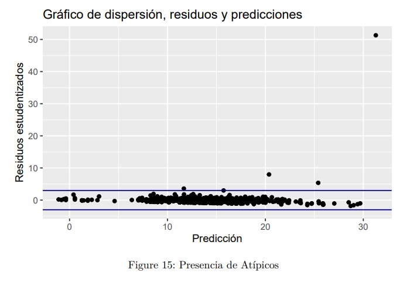
Existen cuatro observación que podría tomarse como dato atípico. Debido a que casi ningún supuesto se cumplió, se optó por utilizar otros métodos de prediccion, que son el método de árboles y bosques:Árbol de decisión
Los modelos basados en árboles consisten en una secuencia de particiones anidadas que dividen el espacio de los predictores donde en cada partición se usa un modelo para predecir la respuesta.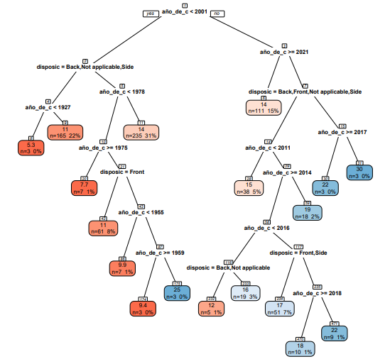
El árbol de decisión muestra que el año de construcción y la disposición de las propiedades son factores importantes para predecir el precio por metro cuadrado. Las propiedades más recientes tienden a tener un precio más alto, y la disposición también juega un papel importante, especialmente en las propiedades más nuevas.Bosques
Para hacer este análisis se quitaron las variables dirección y zona ya que daban problemas y por otro lado estaba municipio que lo que se evaluó en todo el trabajo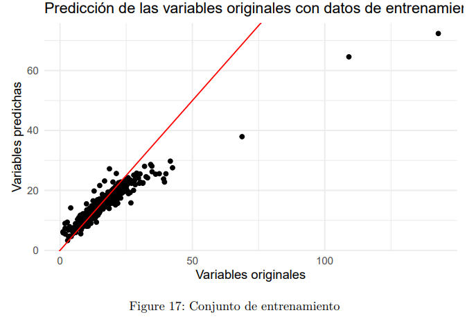
La gráfica compara los valores originales con los predichos por un modelo de random forest usando el 30% de los datos de entrenamiento. Aunque las predicciones no son perfectas, la mayoría de los puntos se encuentran cerca de la línea ideal, siguen la misma tendencia y muestran una relación positiva, lo que indica un desempeño aceptable del modelo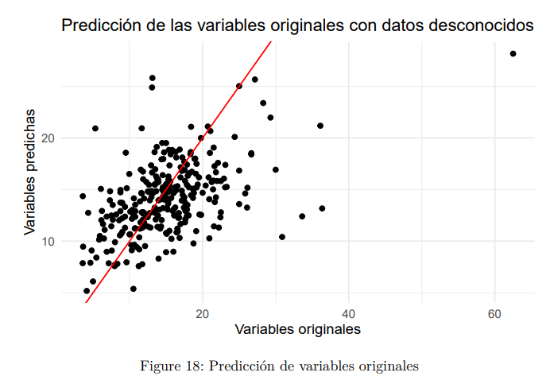
La gráfica compara valores reales y predichos por random forest en el conjunto de prueba (70% de los datos). Se observa mayor dispersión que en el conjunto de entrenamiento, lo que indica menor precisión, dificultades para generalizar a datos nuevos y un posible sobreajuste del modelo.Conclusión
Se puede concluir que, aunque el modelo de regresión lineal no fue completamente exitoso en predecir el precio por metro cuadrado debido a la falta de cumplimiento de algunos supuestos y la baja capacidad explicativa, los análisis realizados proporcionaron información valiosa sobre los factores que influyen en los precios inmobiliarios en Montevideo. Los métodos alternativos como los árboles de decisión y los bosques aleatorios muestran un camino prometedor para futuras investigaciones en el mercado inmobiliario. Igualmente parte del objetivo se cumplió, que era brindarle información a los individuos interesados en alquilar, cual eran las características de las propiedades que los propietarios tienen en cuenta para elevar el precio de las propiedades.Biblografia
- Notas de la unidad curricular Ciencia de Datos con R
- Notas de la unidad curricular Modelos Lineales
- Auguie B (2017). gridExtra: Miscellaneous Functions for “Grid” Graphics. R package version 2.3, https://CRAN.R-project.org/package=gridExtra.
- Wickham H, Averick M, Bryan J, Chang W, McGowan LD, François R, Grolemund G, Hayes A, Henry L, Hester J, Kuhn M, Pedersen TL, Miller E, Bache SM, Müller K, Ooms J, Robinson D, Seidel DP, Spinu V, Takahashi K, Vaughan D, Wilke C, Woo K, Yutani H (2019). “Welcome to the tidyverse.” Journal of Open Source Software, 4(43), 1686. doi:10.21105/joss.01686.
- Schloerke B, Cook D, Larmarange J, Briatte F, Marbach M, Thoen E, Elberg A, Crowley J (2024). GGally: Extension to ‘ggplot2’. R package version 2.2.1, https://CRAN.R-project.org/package=GGally.
- Fox J, Weisberg S (2019). An R Companion to Applied Regression, Third edition. Sage, Thousand Oaks CA. https://socialsciences.mcmaster.ca/jfox/Books/Companion/.
- Farrar, Thomas J. (2024). skedastic: Heteroskedasticity Diagnostics for Linear Regression Models. R Package version 2.0.2. University of the Western Cape, Bellville, South Africa. https://github.com/tjfarrar/skedastic
- Martin Maechler, Peter Rousseeuw, Christophe Croux, Valentin Todorov, Andreas Ruckstuhl, Matias Salibian-Barrera, Tobias Verbeke, Manuel Koller, c(“Eduardo”, “L. T.”) Conceicao and Maria Anna di Palma (2024). robustbase: Basic Robust Statistics. R package version 0.99-2. http://CRAN.R-project.org/package=robustbase
- Trapletti A, Hornik K (2024). tseries: Time Series Analysis and Computational Finance. R package version 0.10-56, https://CRAN.R-project.org/package=tseries.